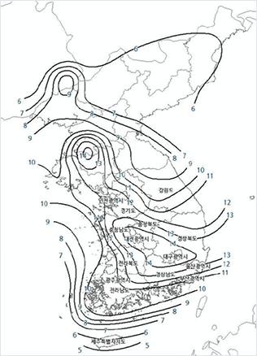
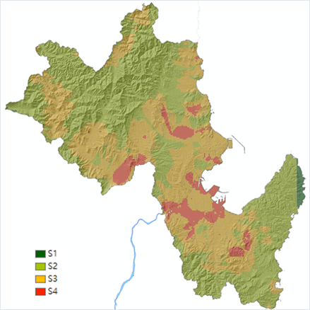

지진재해 지역안전도 평가 방법 지반운동의 결정 지진 발생 위치`의 불확실성 및 지역간의 상대비교를 위해서 기반암(지표 하부의 암반)에 내진설계기준에서 사용하는 국가지진위험지도(소방방재청, 2013)에 규정된 지반가속도를 적용하여 평가 다만 지역별로 지반특성 따른 지반운동 증폭효과를 고려하기 위하여 대상 지역을 0.5km x 0.5km 격자 단위로 분할하여 지반특성 DB를 구축 (지반운동 증폭효과: 지표 하부의 암반에 비하여 토층으로 덮인 지표의 지반운동이 증폭되는 효과) 기반암의 지반가속도에 증폭표과를 곱하여 각 격자별로 지표에서의 대표 지반가속도를 산정하여 건축물 피해 평가에 적용  [그림 3] 1000년 재현주기 국가지진위험지도  [그림 4] 0.5km x 0.5km 격자별 지반분류 (한국지질자원연구원, 2023) [그림 5] 지반증폭효과 (동경도도시정비국)toshiseibi.metro.tokyo.lg.jp/bosai/chousa_6/home.htm#data1 건축물 피해의 결정 건축물 대장 정보(구조, 규모, 용도)를 참고하여 각 건축물을 대표성을 갖는 구조유형으로 분류하고 건설연도와 해당 법령에 따라 내진설계 여부를 판단 각 건축물별로 해당되는 건축물 유형의 지진취약도함수를 이용하여 지표 지반가속도에 상응하는 피해율 산정(지진취약도함수: 지진동의 세기 증가에 따른 손상확률을 나타내는 확률분포함수). 여기서는 지진피해 반파(수리하지 않고는 사용할 수 없는 수준의 피해) 이상의 손상을 기준으로 함